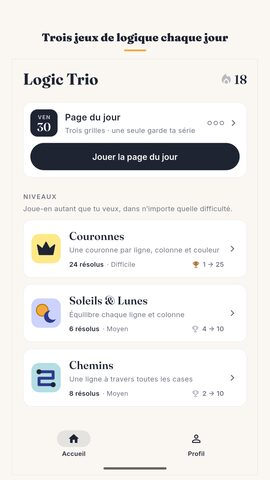
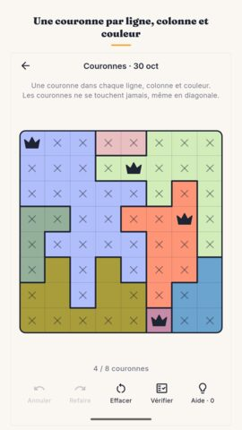
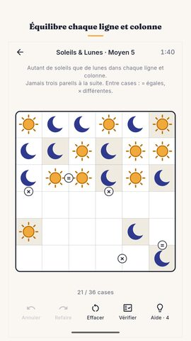
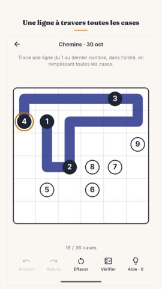
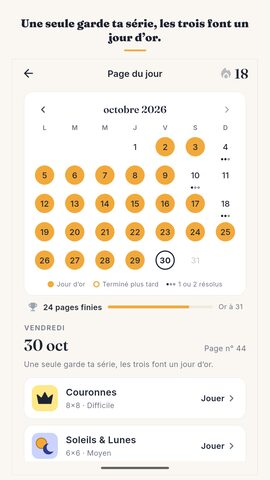
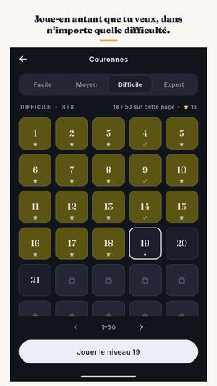
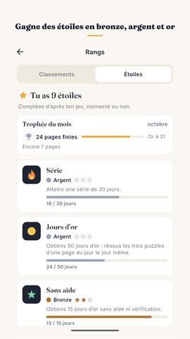
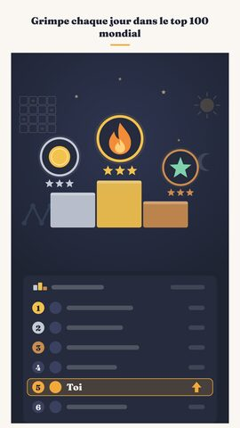

Kit presse Logic Trio
Tout ce qu’il faut pour écrire sur le jeu ou le montrer dans une vidéo. Utilisation libre.
Logic Trio : Jeux de logique
Jeux de logique du jour : Couronnes, Soleils & Lunes, Chemins. Solution unique.
Vidéos
Captures d’écran
















Icône et bannière

À propos du jeu
Une nouvelle page de trois jeux de logique paraît chaque jour, la même pour tout le monde. Couronnes, Soleils & Lunes, Chemins : une seule solution à chaque fois, et dans Couronnes et Soleils & Lunes, jamais besoin de deviner. Résous une grille pour garder ta série, les trois pour un jour d’or.
La page du jour
La page change à minuit, sur ton téléphone. La première date du 17 septembre 2026, et toutes celles parues depuis sont encore dans le calendrier : un jour manqué est un jour que tu peux revenir jouer. Une seule grille résolue garde ta série, et c’est voulu : une journée chargée ne doit pas coûter une série de plusieurs semaines. Les trois font un jour d’or. Dix jours d’or dans le mois valent un trophée bronze, vingt un trophée argent, et le mois entier un trophée or. Des gels de série couvrent les jours où la vie s’en mêle, et quand la page est terminée, tu peux envoyer une courte carte de résultat à qui tu veux, sans rien dévoiler.
Les trois jeux
Couronnes : une couronne dans chaque ligne, chaque colonne et chaque couleur, et jamais deux couronnes qui se touchent, même en diagonale. C’est un star battle.
Soleils & Lunes : autant de soleils que de lunes dans chaque ligne et chaque colonne, et jamais trois pareils à la suite. C’est un puzzle binaire.
Chemins : trace une ligne continue du 1 au dernier nombre, dans l’ordre, en remplissant toutes les cases. C’est un number path.
Des casse-tête qui ne s’épuisent jamais
À côté de la page du jour, chacun des trois jeux de logique a ses propres niveaux numérotés, en quatre difficultés : facile, moyen, difficile et expert. Les quatre sont ouvertes dès la première minute. Chaque jeu contient 1 200 niveaux vérifiés deux fois, soit 3 600 pour les trois, et quand le lot est fini, ton téléphone en fabrique d’autres, aussi longtemps que tu joues. Chaque casse-tête du lot a été résolu deux fois, par deux méthodes différentes, avant d’être publié : « une seule solution » est un fait vérifié, pas une promesse.
Une aide qui explique
Annuler et Refaire sont illimités. Vérifier est gratuit et illimité : il te dit où tu en es sans te donner la grille. Une aide ne remplit pas la réponse non plus : elle montre où regarder et, dans Couronnes et Soleils & Lunes, explique en une phrase pourquoi cette case ne peut être que celle-là, pour que la grille suivante te soit un peu plus facile. S’il y a déjà une erreur sur la grille, l’aide te montre d’abord l’erreur.
Rien ne compte à rebours
Pas de vies, pas d’énergie, pas de coups à épuiser, rien qui tourne contre toi. Le chronomètre compte le temps écoulé, jamais le temps qui reste : il est là pour tes records, et tu peux le masquer. Aucun compte requis. La connexion à Google Play Games est facultative : elle garde ta progression d’un téléphone à l’autre et ajoute succès et classements mondiaux. Tes temps, ta meilleure série et tes grilles résolues tiennent sur une page. Le jeu entier fonctionne hors ligne, sans connexion.
Fait pour être lu
Français, anglais, hindi, portugais, espagnol, indonésien et allemand. Un thème clair et un thème sombre. Des motifs sur les régions colorées pour les daltoniens : le plateau fonctionne aussi en noir et blanc. Un rappel quotidien facultatif, désactivé tant que tu ne le demandes pas. Moins de 25 Mo à télécharger.
Gratuit, avec publicité
Logic Trio est un jeu de logique gratuit, financé par la publicité. Aucune publicité n’interrompt une grille, aucune à l’ouverture du jeu, aucune entre les trois grilles du jour ; les grilles sont hors ligne, seule la publicité a besoin d’une connexion. La dernière semaine du calendrier est toujours ouverte, et une courte vidéo facultative ouvre définitivement une page plus ancienne, recharge tes aides ou répare une série cassée. Rien de tout cela n’est jamais obligatoire pour jouer.
Créé par Nimbleknot.
Questions et bugs : nimbleknot.games@gmail.com
Politique de confidentialité et conditions : https://nimbleknot.github.io/logictrio/
Je ne suis pas programmeur, alors l’IA m’a aidé pour le code. — Ritesh, Nimbleknot